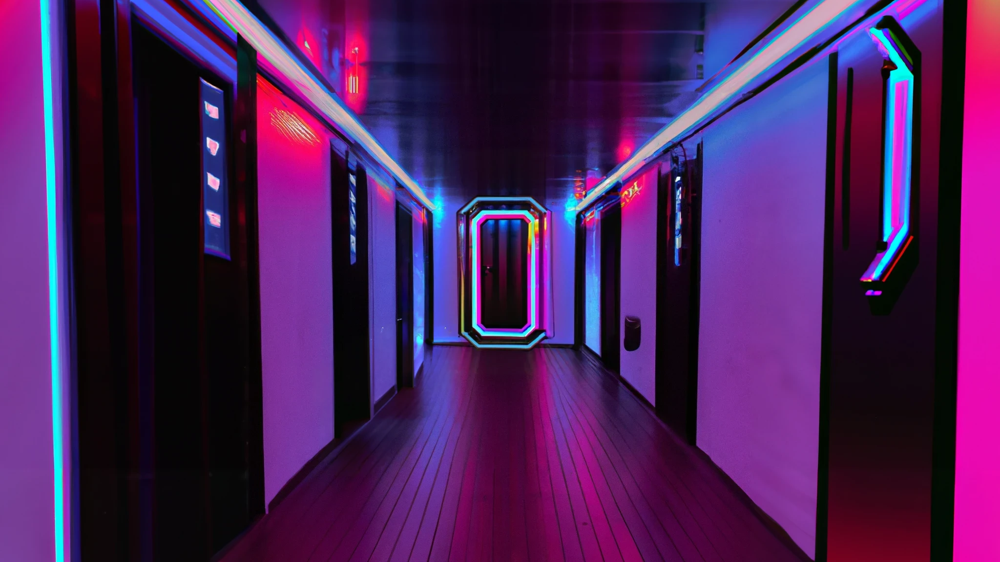

Escape Game
Nous sommes en l'an 2112, la technologie s'est développée si vite, trop vite. Elle est désormais partout et les implants cybernétiques ne sont plus seulement fiction. MegaCorp viens donc d'annoncer sa nouvelle invention: le bras cybernétique br531-6d. Il s'agit d'une invention révolutionnaire, à plusieurs milliards de dollars! Bien évidemment, cette invention attire la convoitise, votre convoitise. Vous êtes donc un groupe de 4 hackeurs, cherchant à dérober les plans de l'entreprise, en espérant pouvoir les revendre pour une somme hallucinante. Ce secret étant extrêmement bien gardé, parvenir à vos fins ne sera pas une mince affaire... Après tout, les rumeurs parlent de tentatives finies en bain de sang ne sont pas rassurantes, surtout si l'on tiens compte de leur sécurité de pointe. Mais vous n'allez pas vous laisser démonter pour si peu n'est ce pas? D'après vos sources, il existerait une fenêtre d'une heure pile où la sécurité serait relâchée, après cela... mieux vaut ne pas y penser! Bon, rejoignez vos complices dans l’accueil de l'entreprise, parés à lancer l'attaque et potentiellement toucher le pactole?

1 heure de stress

Collaborez en équipe

4 joueurs
Hall d'entrée
Un hall d’entrée, semblable à celui des banques. Des guichets, des armoires, des ordinateurs pour les secrétaires. L’espace y est large, il y a une bonne hauteur sous plafond. Des larges enseignes à néon, des écrans futuristes, et des éléments presque tout droit sortis d’une autre dimension sont un peu partout. Une porte blindée partage cet espace avec le couloir réservé au personnel de l'entreprise. Il est nécessaire de la déverrouiller pour poursuivre l’aventure. Énigme: Plusieurs clés sont cachées un peu partout dans le hall.Dans les tiroirs des secrétaires, dans les guichets, dans les armoires… Il faut retrouver les bonnes clés qui permettront d’ouvrir la porte blindée qui sépare le hall du couloir. A noter qu’il faut actionner les clés en étant synchronisés entre membres du groupe.
Le couloir
Un long couloir, illuminé par des néons multicolores, un capteur s'active quand vous entrez et allume les lumières mais celles-ci se désactivent toutes les 5 minutes. Plusieurs petites salles sont accessibles, celles-ci étant remplies de serveurs, panneaux électriques et câbles se trouvant à l'intérieur. Au fond du couloir, une porte menant au bureau où se situent les plans du bras cybernétique. Petite difficulté: si la lumière venait à être allumée plus de 4 fois d'affilée, cela déclencherait l'alarme. Il est donc important de faire attention au temps utilisé et de ne pas activer la lumière plus de 4 fois, sans quoi il faudrait continuer dans le noir. Heureusement, vous avez des lampes torches, au cas où vous en arriveriez à ce stade. Concernant la porte, elle est bloquée par un système de reconnaissance faciale, vous disposez d'une copie parfaite en 3D de la tête du dirigeant de la banque mais il vous manque la connexion au système de la porte. Trafiquer les câbles dissimulés sous les panneaux électriques et les serveurs afin de rediriger la connexion jusqu'à votre hologramme et ainsi pouvoir ouvrir la porte.
Le Bureau
La fin est proche. Pour récupérer les plans et obtenir le trésor, il faut réussir à contourner la sécurité informatique qui protège fidèlement les données stockées. Vos talents de hackers permettent, par le biais de plusieurs énigmes et actions, d'entrer dans le système. De là, il faut récupérer les plans, encore faut-il les trouver. Cette scène se passe sur vos ordinateurs portables, que vous avez pris soin de transporter jusqu'ici. Vos ordinateurs portables sont connectés par le biais de câbles USB aux serveurs présents dans la salle. Pour pouvoir accéder aux serveurs et ainsi récupérer le document il faut dans un premier temps trouver les identifiants (avec une marge d'erreur apposée, si l'authentification échoue trop le système vous donne un indice). Les Identifiants du compte administratif pourraient être trouvés de façon physique en fouillant la salle. Une fois connectés avec vos propres ordinateurs, trouvez le document des plans du bras dans plusieurs dossiers et sous dossiers, cherchez manuellement serait trop long donc soit vous vous basez sur votre chance, soit vous utilisez un document d'aide que vous avez pu trouver plus tôt dans l'aventure afin de vous aider dans la mission. Pour copier le document sur vos ordinateurs, vous devez récupérer un code pour accéder au fichier qui est protégé par mot de passe. Le code étant certainement en rapport avec la vie du dirigeant de la banque. Rechercher dans ses dossiers personnels un code qui pourrait fonctionner. Une fois les plans récupérés il ne vous reste plus qu'à sortir de la banque avant la fin du temps imparti.